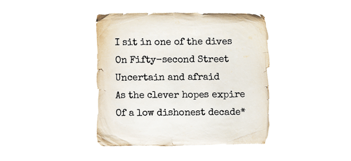
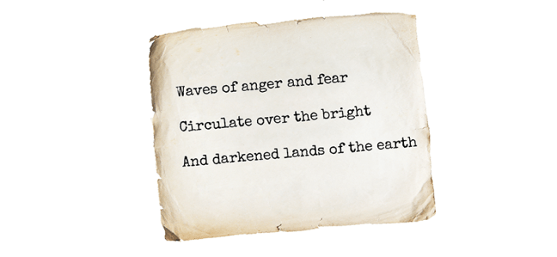
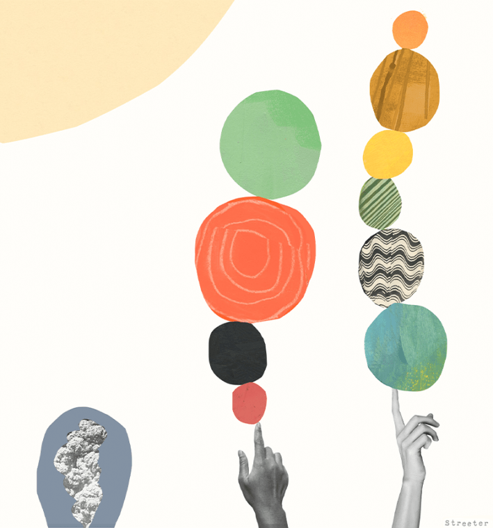
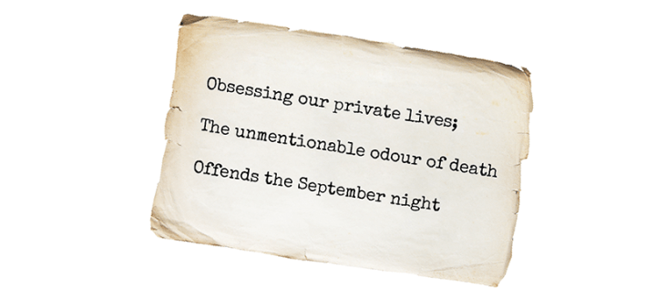
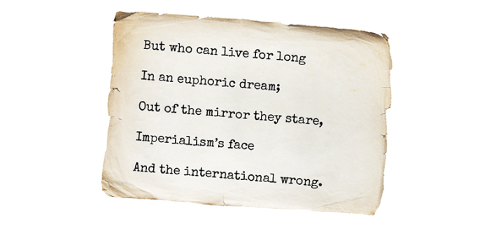
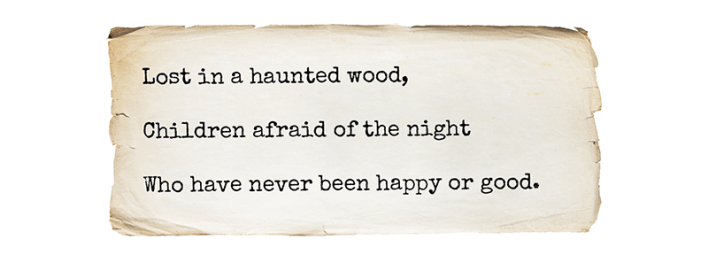
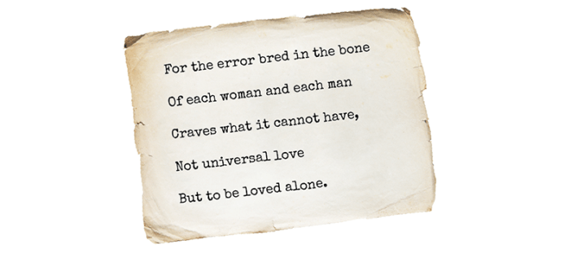
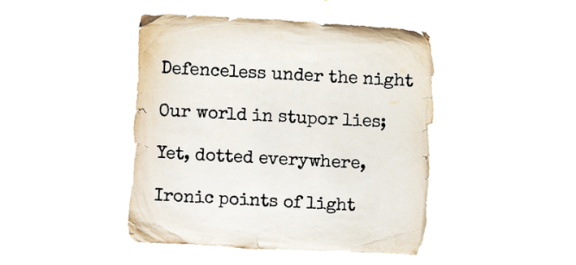
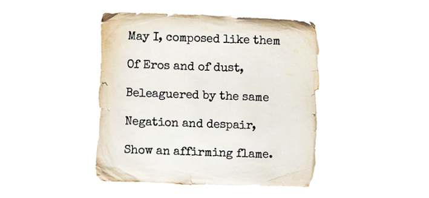

September 1, 1939.
W. H. Auden wandered into the Dizzy Club in midtown Manhattan and sat down at the bar. Amid jazz rhythms and stiff drinks, the poet tried to find balance in a world that, from a false equilibrium, had tipped.

* These and the following lines of poetry are selections from W.H. Auden’s poem, “September 1, 1939.”
Hitler had just invaded Poland, and the world, for the second time, was falling into war.
On the same day, the science journal Physical Review published its 56th volume, containing two papers that, together, could unravel the universe.
In one, Robert Oppenheimer and Hartland Snyder gave the first description of a star collapsing to a black hole. In the other, Niels Bohr and John Archibald Wheeler showed how an atomic nucleus can split, releasing a horrific energy.
The continuity of spacetime on the largest scales, the stability of matter on the smallest, and the human world smack in the middle: They all teetered at once.
It was a date that formed its own singularity. If the precariousness of human affairs had once been offset by the solidity of physics, it was suddenly precarious all the way down.

Everyone thought the collapse would stop. Albert Einstein, Karl Schwarzschild, every physicist who’d ever thought about ultra dense objects contracting under their own gravity, they figured it would stop eventually. Knock a vase off a table and it lands on the floor; it doesn’t just fall forever. There had to be some ground beneath our feet. But in their paper “On Continued Gravitational Contraction,” Oppenheimer and Snyder proved otherwise.
When an ordinary star is shining, it’s thanks to a perfect balance between the outward pressure of nuclear fusion and the inward squeeze of gravity. That balance is the star. But when it runs out of fuel—when there’s no more hydrogen to fuse into helium, no more helium to fuse into carbon and oxygen—the outward pressure goes slack and gravity takes over.
For a medium-sized star (eight times the mass of our sun or less), the outer shell is ejected into space while the inner core collapses, its material squeezed denser and denser until … it stops. There’s a ground.
The laws of quantum physics prevent electrons from occupying the same state. As they’re crammed closer and closer, their momenta are forced to diverge, creating enough outward pressure to halt the crush of gravity. Like evenly matched arm wrestlers, they’re caught in a deadlock. We call it a white dwarf—a dense, blue-white ember glowing faintly in the sky.

Illustration by Katherine Streeter
But say the star is bigger, or the white dwarf steals some mass from a companion star. Then, the electron pressure isn’t enough. The star keeps collapsing, its density rising. The electrons are crushed into the nuclei; they combine with protons to form neutrons. Gravity tries to squeeze those neutrons together into the same quantum state, so their momenta spike wildly, creating a new pressure that catches the fall. There’s a floor beneath the floor. This new equilibrium is a neutron star.
But if the star was even more massive—if, say, it started out 20 times the mass of the sun—the neutron pressure won’t hold. And what then?
“If the mass of the original star were sufficiently small,” Oppenheimer and Hartland wrote in their September 1 paper, “or if enough of the star could be blown from the surface by radiation, or lost directly in radiation, or if the angular momentum of the star were great enough to split it into small fragments, then the remaining matter could form a stable static distribution … We consider the case where this cannot happen.”
The case, that is, where there is no floor.
Using Einstein’s equations, Oppenheimer and Snyder showed that the buckling star would shrink, eventually reaching the size of its “gravitational radius”—what we’d now call its event horizon—the boundary at which gravity grows so strong, and the geometry of spacetime so warped, that light ends up running in place; every path outward leads right back in.
Read more: “Haunted by His Brother, He Revolutionized Physics”
To an observer watching from a distance, wavelengths of light would appear increasingly stretched and time increasingly slow as the star shrinks. It’s Zeno’s collapse: The infalling matter takes forever to approach the horizon and never makes it across. The horizon looks like a floor, but it’s only relative. Switch to the perspective of the infalling matter and there is no horizon. There’s just the world still collapsing, and gravity, having eaten everything else it could find, eats itself. No counterforces can be summoned. Reality is out of options. In the space of a second, all contracts to a point, and then nothing.
Oppenheimer and Snyder themselves hung onto a shred of hope. The formation of the singularity—the end of space and time and world—was so unnerving they were convinced they were wrong. That they’d left out “some essential physical fact which would really smooth the singularity out.”

At 4 o’clock that September 1 morning, at the central post office in Danzig, the phone lines went dead. Wedged into the Polish Corridor, Danzig was a semi-autonomous city, but the Poles ran the railways and the mail. Forty-five minutes after the Germans cut the phone lines, the first shots rang out over the Baltic Sea. Volunteers rushed to defend the building: Konrad Guderski, combat engineer and Army Reserve Sublieutenant; Jan Michon, director of the post office; 51 Polish employees; plus the building caretaker, his wife, and their 10-year-old daughter, Erwina. They stockpiled machine guns, assorted rifles, and hand grenades as the Nazis approached.
In Warsaw, air raid sirens sounded over the city. Commuters poured from street cars and took shelter in the nearest buildings. Police officers hurried stray pedestrians inside. In Pilsudaski Square, a family of farmers ditched their horse-drawn cart and ran for cover. All was silent. A light rain fell over the empty streets—over buses, cars, and trams abandoned in the middle of the road. Then one of the farmers ran back out, attached a feed bag to his horse’s muzzle, and quickly ducked back inside.

Atomic nuclei were supposed to be stable. Sure, you could bombard them and they’d emit a particle or two, like chips off stones, but the stones remained. Then chemists hit a uranium atom with some neutrons and ended up with barium—an element so far down the periodic table it made no sense. As if the uranium nucleus had snapped in half. No one knew how that could happen. But in their September 1, 1939 paper, “The Mechanism of Nuclear Fission,” Bohr and Wheeler showed that the nucleus is less like stone and more like water. “In the present article,” they wrote, “there is developed a detailed treatment of the mechanism of the fission process and accompanying effects, based on the comparison between the nucleus and a liquid drop.”
In a nucleus—made up of protons and neutrons—the repulsive electrostatic force between the positively charged protons exerts an outward pressure, threatening to blow the whole thing apart, while the nuclear force, which attracts at close range, holds it all together. In certain heavy isotopes—like uranium-235, or plutonium-239—the configuration of protons and neutrons sits right at the edge of stability. Hit it with a neutron and the whole thing deforms, like a liquid drop stretched from the faucet. In their paper, Bohr and Wheeler worked through calculations showing the various stages of deformation—how it oscillates and elongates and tries to hang on.
*Read more: “When Reality Came Undone”*
Sometimes a nucleus can take the hit and recover. It can absorb the neutron, deform, then shake off the extra energy by emitting a gamma ray; the neutron finds a place in the nucleus, which settles into stability as a heavier isotope. Sometimes it’ll spit the neutron back out or convert a neutron into a proton or teeter in metastability before it finds a new ground state.
But sometimes, Bohr and Wheeler showed, there’s a point of no return. The neutron deforms the liquid drop just enough that it can’t recover. It elongates and pinches in the middle; groups of protons and neutrons huddle at either end, the nuclear force barely holding it all together, like the surface tension that keeps the drop hanging from the faucet, ready to drip.
Bohr didn’t like the word “fission.” (“What’s the verb?” he asked Wheeler. “You can’t say a nucleus ‘fishes.’ ”) But there’s no stopping it now. The nuclear force, which only works at close range, can’t span the shape, while the electrostatic repulsion crosses the full distance and sends the two halves bursting apart. “By the division of the nucleus,” Bohr and Wheeler wrote, “a very large amount of energy will be set free.”
But the result of fission isn’t just energy. It’s also more neutrons. Place the dominoes just so, and you could start a chain reaction.

The children of London stood in line at every train station in the city, one hand clutching their mother’s, the other a gas mask. Telephone service was cut off between the United States and Europe. The British banks moved their money to mansions in the countryside. A blackout was enforced; traffic lights were covered with slitted cardboard discs. At the London Zoo, 40 venomous snakes and a handful of black widow spiders were euthanized to prevent their escape in the chaos. Three thousand taxi drivers joined the fire service; trailer pumps were fitted to their cabs. In Manchester, 3,600 pregnant women were evacuated. (Newspapers reported that the men left behind were forced to cook their own breakfasts.) In Cairo, jewels from King Tutankhamun’s sarcophagus were packed in bomb-proof cellars. In Paris, the last piece of stained glass was removed from the Church of Saint-Denys de la Chapelle and carefully stashed away.

And more happened. In Heath, Massachusetts, Norma Behr was presented with a basket of flowers in honor of her 24 years of service at the New England Telephone Company. In New Bedford, sewer workers recovered Daisy Fleming’s lost pocketbook. A Great Dane in Beaver Falls, Pennsylvania gave blood to save the life of a Boston terrier named Tiny. In Cleveland, Ohio, hundreds of children attended a marshmallow toast. And at noon in Berlin, with the sound of gunshots in the distance, a crowd spotted a flock of storks and cheered.

In life, in the universe, there are tipping points. Points of no return. Sometimes you fall and something catches you, and sometimes you just keep falling. We want to believe that things are stable to their core, like the fixed stars in the firmament, when it’s all always on the brink, the forces of nature pushing everything to extremes, to the places where they break. And it’s only because there are nodes along the way—objects that are really eyes in the storm—where the forces momentarily cancel out, or hold each other at bay, that spacetime and structure and society persist, at least for a little while, until something pushes them off balance again and one force or another is set loose with no brakes. This triggers the chain reaction: the compounding effects of neutrons on neutrons, gravity on gravity, fear on fear, power on power. When that happens, there’s no going back. There’s only some new equilibrium if we’re lucky.
But here may be the essential fact that Oppenheimer and Snyder feared they’d left out. Stars and atoms succumb to the forces of nature. But you and I are forces of nature. We can push back and try to bend the world to some stable state before it gets away from us.

Lead illustration by Katherine Streeter